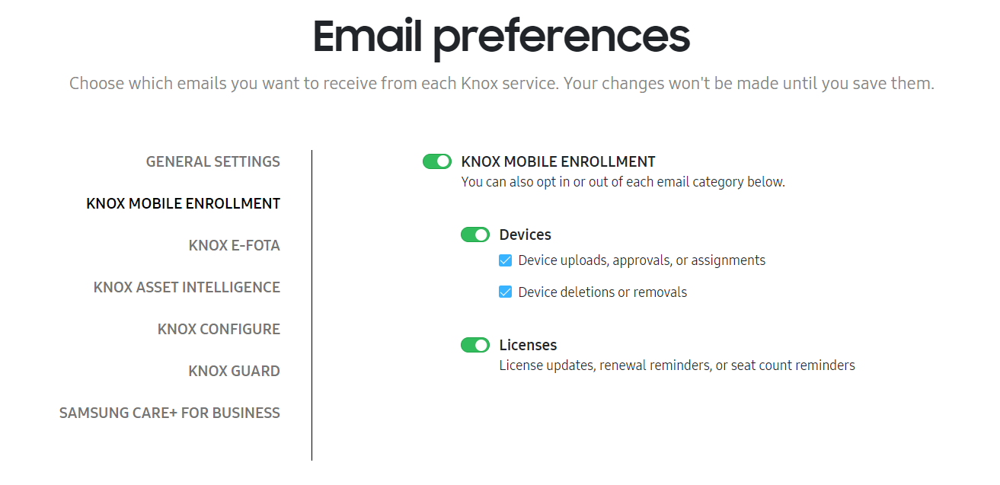

Configure your account settings
Last updated November 6th, 2025
On this tab
The Knox Admin Portal provides flexible configuration options related to account settings. You can edit personal information, set up an identity provider for your company, and manage your email preferences and privacy settings. If you’re in the EU, you can also configure your cookie preferences.
To manage your account information, identity provider settings, and privacy settings:
-
In the top-right corner of the Knox Admin Portal, click your account icon > My account. The My account page opens.
-
You’ll see the following tabs:
Tab Purpose ACCOUNT INFORMATION Edit your personal information and company details, set up two-step verification, as well as change your password and email settings.
IDENTITY PROVIDER SETTINGS Provides information you need to set up an identity provider for your Knox account. Refer to the identity provider configuration guide for more details. PRIVACY SETTINGS Request a record of or delete your personal data that Samsung has collected related to Knox services. You can also delete your Knox account and any data associated with Knox services you're registered for.
Set email preferences
You can choose which types of emails you want to receive from individual Knox services, and whether you want to receive emails about information common to the Knox Admin Portal, such as account and admin details.
You’ll receive service emails in the language you set on the Knox Admin Portal.
To set your email preferences:
- In the top-right corner, click your account icon > Settings.
- Click EMAIL PREFERENCES.
- For each Knox service, configure your desired email settings. By default, all settings in a category are turned on.

Manage cookie preferences
The following information only applies to users in the EU region.
The Knox Admin Portal and its related Knox cloud services use cookies to enhance your user experience. If you’re in the EU region, you can choose to opt out of certain non-essential cookies.
Cookie footer notification
Upon signing in to the Knox Admin Portal, a cookie footer notification provides details about the information Samsung collects to enhance your Knox cloud service experience. From here, you can also view the Privacy Policy and Cookie Policy.
In the footer notification, you can take the following actions:
| Action | Result |
|---|---|
| CONTINUE WITHOUT ACCEPTING | Opts you out of non-essential cookies and closes the notification. |
| CONFIGURE | Opens a dialog where you can select which types of cookies you want to opt in or out of. |
| ACCEPT ALL | Accepts all essential and non-essential cookies. |
If you select any action, the cookie consent notification does not appear in the Knox Admin Portal for the current and future sessions. If no action is selected, the notification is shown upon a page refresh or navigation to a new page on the portal.
Configure cookies
You can also choose to manage your cookie preferences in the Knox Admin Portal. To configure your cookies:
- In the top-right corner, click your account icon > Settings.
- Click CONFIGURE COOKIES.
A dialog shows with information about the essential and non-essential cookies that Samsung collects. Click VIEW COOKIES to see more information about each type of cookie. You can’t opt out of essential cookies, but you can select which non-essential cookies you want to accept.
Once you’re finished editing your cookie preferences, click SAVE PREFERENCES AND CLOSE.
This document was updated for the Knox cloud services 25.11 UAT.
On this tab
- Update your account information
- Set email preferences
- Manage cookie preferences
- Cookie footer notification
- Configure cookies
- Set up two-step verification (2SV)
- For Samsung account for Business
- For personal Samsung account
- Additional options for receiving verification codes
- Text message
- Authenticator app
- Send code to your devices
- Backup codes
- Trusted device(s)
The Knox Admin Portal provides flexible configuration options related to account settings. You can edit personal information, set up an identity provider for your company, and manage your email preferences and privacy settings. If you’re in the EU, you can also configure your cookie preferences.
Update your account information
To manage your account information, identity provider settings, and privacy settings:
-
In the top-right corner of the Knox Admin Portal, click your account icon > My account. The My account page opens.
-
If signed in with Samsung account for Business, you’ll see the following tabs:
Tab Purpose ACCOUNT INFORMATION On this tab you can:
- Edit your first, middle, and last names.
- Click EDIT INFORMATION to open the Samsung account for Business console and update your personal information.
- Click CHANGE PASSWORD to open the My account dashboard and update your password.
- Click CHANGE PREFERENCE to update your preferences for receiving product updates.
PRIVACY SETTINGS Request a record of or delete your personal data that Samsung has collected related to Knox services. You can also delete your Knox account and any data associated with Knox services you're registered for. -
If signed in with your personal Samsung account, you’ll see the following tabs:
Tab Purpose ACCOUNT INFORMATION Edit your personal information and company details, set up two-step verification, as well as change your password and email settings.
IDENTITY PROVIDER SETTINGS Provides information you need to set up an identity provider for your Knox account. Refer to the identity provider configuration guide for more details. PRIVACY SETTINGS Request a record of or delete your personal data that Samsung has collected related to Knox services. You can also delete your Knox account and any data associated with Knox services you're registered for.
Set email preferences
You can choose which types of emails you want to receive from individual Knox services, and whether you want to receive emails about information common to the Knox Admin Portal, such as account and admin details.
You’ll receive service emails in the language you set on the Knox Admin Portal.
To set your email preferences:
- In the top-right corner, click your account icon > Settings.
- Click EMAIL PREFERENCES.
- For each Knox service, configure your desired email settings. By default, all settings in a category are turned on.
Manage cookie preferences
The following information only applies to users in the EU region.
The Knox Admin Portal and its related Knox cloud services use cookies to enhance your user experience. If you’re in the EU region, you can choose to opt out of certain non-essential cookies.
Cookie footer notification
Upon signing in to the Knox Admin Portal, a cookie footer notification provides details about the information Samsung collects to enhance your Knox cloud service experience. From here, you can also view the Privacy Policy and Cookie Policy.
In the footer notification, you can take the following actions:
| Action | Result |
|---|---|
| CONTINUE WITHOUT ACCEPTING | Opts you out of non-essential cookies and closes the notification. |
| CONFIGURE | Opens a dialog where you can select which types of cookies you want to opt in or out of. |
| ACCEPT ALL | Accepts all essential and non-essential cookies. |
If you select any action, the cookie consent notification does not appear in the Knox Admin Portal for the current and future sessions. If no action is selected, the notification is shown upon a page refresh or navigation to a new page on the portal.
Configure cookies
You can also choose to manage your cookie preferences in the Knox Admin Portal. To configure your cookies:
- In the top-right corner, click your account icon > Settings.
- Click CONFIGURE COOKIES.
A dialog shows with information about the essential and non-essential cookies that Samsung collects. Click VIEW COOKIES to see more information about each type of cookie. You can’t opt out of essential cookies, but you can select which non-essential cookies you want to accept.
Once you’re finished editing your cookie preferences, click SAVE PREFERENCES AND CLOSE.
Set up two-step verification (2SV)
Two-step verification of accounts during the sign-in process reduces the risk of someone accessing your account information in the event that your password has been compromised.
This additional security measure requires you to enter a code as a second form of authentication, in addition to the existing password you use to sign in to your account.
For Samsung account for Business
If you’re an admin or sub-admin, two-step verification is set up during the creation or activation of your Samsung Knox account. You can manage two-step verification settings in the Samsung account for Business console.
For personal Samsung account
To enable two-step verification for a personal Samsung account:
-
Sign in to the Knox Admin Portal using your Samsung account credentials.
-
In the top-right corner, click your account icon > My account.
-
On the My Account page, under KEEP YOUR ACCOUNT SECURE, click SET UP TWO-STEP VERIFICATION.
-
You are redirected to your Samsung account page to verify your identity and sign in. In the dialog, enter your account password and click Confirm.
-
Under Password and security on the Security tab, select Two-step verification.

-
Enter your phone number, then click Send code.
-
Enter the verification code sent to your phone number. Next, click Verify, then Done.
-
(Optional) Download or print your backup codes, so you can still complete two-step verification if your phone is lost or stolen.
Once your two-step verification has been enabled, you will be prompted to enter a verification code sent to your phone number each time you sign in.
Additional options for receiving verification codes
Once you’ve registered your phone number for two-factor verification, you have the option of receiving verification codes in several different ways.
To view your additional options:
- Sign in to the Knox Admin Portal using your Samsung account.
- In the top-right corner, click your account icon > My account.
- On the My Account page, under KEEP YOUR ACCOUNT SECURE, click SET UP TWO-STEP VERIFICATION.
- You’ll then be redirected to your Samsung account page. To verify your identity, enter your account password and click Confirm.
- On the Security page, under Password and security, you’ll see that Two-step verification is now turned on. Click Two-step verification.
- Under Two-step verification, you’ll see several options for receiving verification codes. Select one or more option(s) that best suit your organization.

See below for more information on each option.
Text message
This option allows you to receive verification codes by text message sent to your preferred phone number.
You’ll need an active SIM card in order to receive text message verification codes.
Authenticator app
Authenticator apps, such as Microsoft Authenticator and Google OTP, are an additional way to receive verification codes. Rather than entering a code from a text message, you’ll enter a one-time passcode (OTP) from your authenticator app.
To begin using an authenticator app, you’ll first need to install one on your device. See Install an authenticator app for further instructions.
Once you’ve successfully installed the app on your device, you’ll need to add your Samsung account to the authenticator app.
To do this:
- Go to Security > Two-step verification > Authenticator app.
- On the Set up your authenticator app page, either scan the QR code or manually enter the key in your authenticator app to add it to your Samsung account. Click Next.
- Enter the code from your authenticator app in the Verify your authenticator app field, then click Verify.
Send code to your devices
This feature allows you to receive verification codes as notifications on your Galaxy devices. You’ll then need to enter the verification code, alongside your ID and password, to sign in.
To use this method, you’ll need to first add one or more Galaxy device(s). To do this, simply sign in to your Samsung account on the Galaxy device.
To view your Galaxy devices, go to Security > Two-step verification > Send code to your devices. Use the toggle key to select which devices you’d like to send codes to.
Backup codes
Backup codes make it possible to complete two-step verification even if other verification methods can’t be used.
To view your backup codes, go to Security > Two-step verification > Backup codes. On this page, you’ll see 5 unique 9-digit codes displayed. Download and print these codes so you can access them when needed.
Make sure you keep these codes confidential to secure your account from unauthorized access.
To use your backup codes to sign in to your Samsung account:
- Sign in to the Knox Admin Portal using your Samsung account.
- When prompted to use two-step verification, click Didn’t get the verification code?
- On the Two-step verification page, click Verify with backup code.
- Enter one of your saved backup codes, then click Verify.
Each backup code can only be used once. Once you’ve used all 5 backup codes, you’ll need to generate new ones. To do this, go to Security > Two-step verification > Backup codes, and click Get new codes.
Trusted device(s)
This feature gives you the ability to bypass two-step verification by designating one or more device(s) as trusted. To do this, you’ll need to select the Skip two step verification on this device next time checkbox when entering your verification code for the first time.
From now on, you can sign in on this device without two-step verification.
To view your trusted devices, go to Security > Two-step verification > Trusted device(s).
You can remove a trusted device that you lose or sell to ensure that your account stays protected.
To remove all trusted devices, go to Security > Two-step verification > Trusted device(s). On the following page, click Remove all. Review the changes to be made, then click Remove all to confirm the change.
Is this page helpful?